Several people (or several of your own devices) can work on the same records — orders in the ERP, the building in the Modeller. There is no database server and no application server: the devices pass small encrypted bundles through a shared place on GitHub, and each device keeps its own copy.
Set up
Press the Team pill (the two heads) — in the Modeller, the Team icon. Press Turn on team mode. The page reloads; in the ERP a Team chip appears in the status bar.
On the first device, open the Team panel and press Start a team. Copy the invite link it shows.
On the other device, open that link (or paste the invite into the panel) and press Join. It shows a device code and Waiting for approval.
Back on the first device, press Check join requests, match the device code, choose the role and press Approve.
On the joining device press Visit. From now on, work as usual and press Visit to send your changes and fetch everyone else's.
You can also pick Your avatar in the panel; the others see it after your next Visit.
The system default, and your own
The Team panel shows System default: a ready-made shared place (a trial repository on our GitHub) so you can try it without setting anything up. You can replace it at any time with your own repository and key (Save as my own); the panel then says Your own.
The trial covers one full test cycle: an order, its line, and Complete. After the first Complete, further new changes stay on your device and the chip says Trial cycle finished. Use your own repository and key to keep going — there is no limit on your own setup.
Who is on what
The Team panel has a People list: who is active, what each person is on, and their last tasks. In the ERP, My role scope shows the people whose role is close to yours and Everyone shows all (the Modeller always shows everyone). Tick Don't show what I'm on if you prefer not to share it. In the ERP, when you open a record someone else is editing, a note at the top of the form says <name> is editing this and for how long.
What the chip tells you
Team · 1A2B-3C4D · team devices 2
Your device code and how many devices the team has.
waiting for approval — press Visit
The founder has not approved this device yet (or you have not visited since).
my ops · seen · refused · waiting on · last visit
What you sent, how much of it the others have seen, how much was refused, and when you last visited.
Your copy of … is not the team's … Update it, then try again.
Every device in a team must start from the same copy of the shipped demo data. Until yours matches, nothing is taken in and your own new changes stay on this device.
N changes from a newer app wait — update this app
Someone works with a newer version of the app. Their changes are kept, not lost; they are taken in as soon as you update.
N changes wait for a translation rule from the team admin
Someone works with an older version. The team admin publishes a rule that translates their changes; your device picks it up on its next Visit and takes the changes in.
changes from a retired version were ignored
The team admin has retired that old version; changes still made with it are not taken in.
N local-only (not shared)
Changes that stayed on this device (for example after the trial cycle). Hover to see why.
What happens when two people change the same thing
If two devices change the same field (or both Complete the same document) before they have visited, nobody's work is silently dropped: both devices show the same message as the classic client, Current record was changed by another user, please ReQuery, and keep the last agreed value. A Complete is all-or-nothing: until the clash is settled the document stays as it was, with none of its consequences.
Who may complete a document (ERP)
Who may complete a document is a role, the same as in the classic client: the role's Document Action Access tab (Role window). The Process button lists, under Document Action, only the actions the role you are logged in with may use on that document. If none is left, the list is empty and the button says No legal actions from ….
A team can also name the one role that completes each kind of document: for example only head office's role completes orders, while the shops' devices only send in their sales. The team admin publishes that list (see For the team admin). On every device it then works like ordinary Document Action Access: for the roles that are not the executor, the Process button offers no document action for those documents, and the offer comes back by itself when the list changes.
The list holds roles only. A list that names anything but a role (for example "whoever created the document") is refused when it is published.
Two roles are in play. The list of actions follows the role you logged in with. The role the founder chose when approving your device is your team role, and that is the role every device checks when your Complete arrives. If you log in with a role that is not your team role, the app notes it in its log (§TEAM_ROLE_MISMATCH); the Complete is still judged by the team role.
A Complete from the wrong role is refused when it is merged (reason not-executor), on every device, including one that only now reads the whole history. All of that Complete's consequences are refused with it: a document is never half-completed. The sending device's chip counts it under refused.
The rule in force at the time is the one that counts. A Complete that was refused stays refused if the list is changed or emptied later, and one done after the change is judged by the new list.
An office team has no such list unless its admin publishes one: whichever role has Document Action Access for the action may complete, as in the classic client.
Standard imports, local first
A till or a borrower's phone never calls the office while it works. It writes its own rows on the device (the classic client's Import Order lines and Import Payment tenders) and they go up at the next Visit. Head office then runs the same import processes the classic client has, so the books are made the classic way. No real-time connection is needed anywhere.
1. Set up a POS team
Choose the POS plan when the team is founded. The POS plan ships beside the office plan; the founder picks one when the team is started, and every device reads the same one. There is no button for it: on head office's device open the ERP with ?teamplan=pos at the end of the address, for example https://red1oon.github.io/bim-ootb/erp/idempiere.html?teamplan=pos. Without it you get the office plan (everyone shares everything).
Log in (in the GardenWorld sample: GardenAdmin). Press the ⋯ button at the bottom right, then the Team pill. Press Turn on team mode (the page reloads and keeps ?teamplan=pos), open the Team panel again and press Start a team.
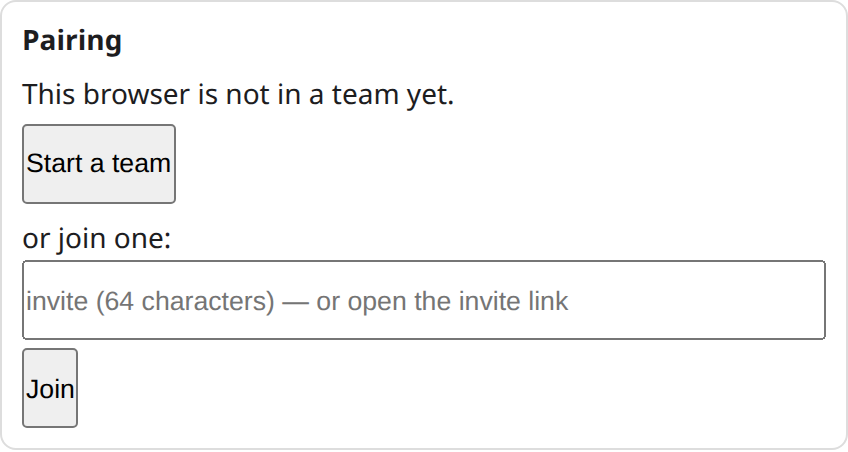
Before: This browser is not in a team yet.
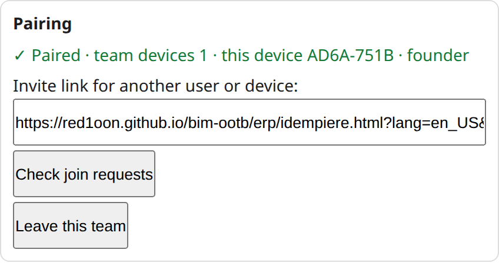
After Start a team: the Invite link and Check join requests.
Copy the invite link. On each till (or phone), open it, or paste the invite into the Team panel and press Join. The device shows a device code and Waiting for approval — then press Visit. (The borrower's phone has its own page, see section 4.)
Back at head office press Check join requests, match the device code, and in the role list choose Web Service Execution (50004). Press Approve.
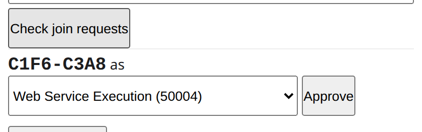
A join request: the role list and Approve.
Bind each till to its branch. An approval can also tie the device to a record: a till to its branch (the organisation), a borrower's phone to the customer (the business partner). The panel's Approve button chooses the role only; the binding is made with the app's admin function TeamSync.approve(request, role, record), where the record is the branch's AD_Org_UU or the customer's C_BPartner_UU. A second device of the same branch is approved onto the same record. A branch's replenishment goes only to the till bound to that branch, and a till or phone that is bound to nothing is sent nothing.
Why tills and borrowers use Web Service Execution. It is the classic client's own role for an outside system that only deposits import rows: it has no windows, only two processes, and no Document Action Access, so it is offered no Complete. What tells one till from another, or a till from a borrower, is the record it is bound to, not its role.
2. The till's day, including offline
Each sale is saved on the till itself: its lines as Import Order rows (the ticket number is the Document No, for example POS1/2026-10-28/0101: station, date, number, so it is unique) and its tenders as Import Payment rows. A return is a line with quantity −1. These are plain saved rows; nothing waits for a connection.
Nothing leaves the till until you press Visit on the Team bar. A Visit sends only what this till wrote, and brings back only what the plan declares for it (below).
No connection: the Visit does not go through. Nothing is sent and nothing is lost; the tickets stay on the till, and head office sees none of them. When the connection is back, one Visit sends them all, once; the Visits after that send nothing more.
What comes back: only the stock movement that head office made for that till's branch. The till is not sent its completed orders, or any other branch's movement.
There is no standalone till program yet: a till today is a device that deposits these rows.
3. Head office's day
Sign in as a head-office role (in the sample: GardenAdmin, role GardenWorld Admin). Everything below is in the menu, under the classic client's own names.
Look at what arrived. Menu Data Import lists the import windows. Import Order shows the tills' ticket lines; its columns Imported (N or Y) and Import Error Message tell you what is waiting and what could not be made. Import POS Sale shows one row per ticket with Lines, Tenders, Lines Total, Tenders Total and Difference (Tenders - Lines), so a ticket whose money does not add up is visible before you import it. (The two POS entries appear when the System Administrator has started the POS integration plugin, see section 5.)
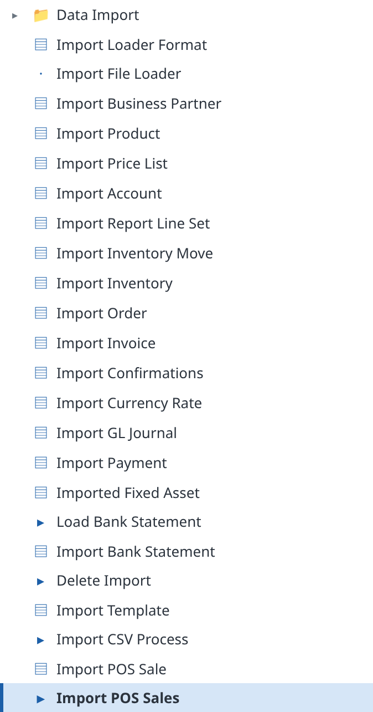
The Data Import menu.
Import POS Sales (or Import Orders). For POS sales open Import POS Sales: Tenant, Organization, Bank Account (required) and Ticket No (one ticket only), then Run. Each ticket is made all or none: one completed order, its invoice, and its receipts allocated to it, so nothing is left open. A ticket whose tenders do not match its lines is left whole, marked E with a message that names both totals. The answer reads OK #1/0: tickets made / tickets left whole.
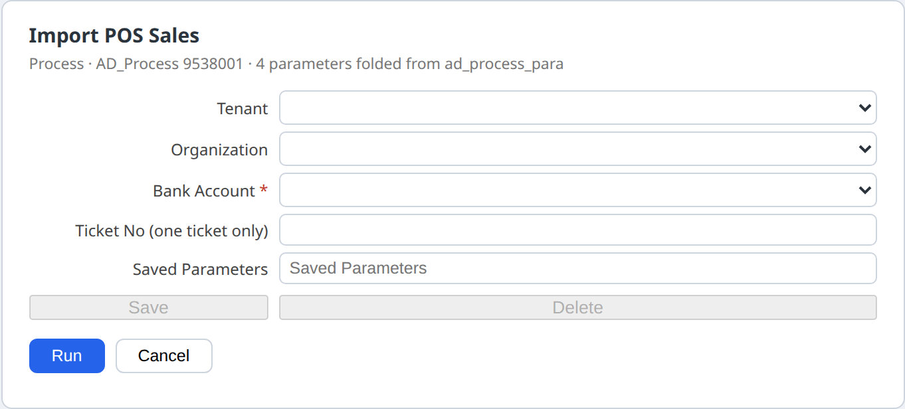
The Import POS Sales dialog.
For plain orders open Import Order, press the gear in the toolbar, choose Import Orders, set Tenant, Organization and Document Action (choose Complete; the dialog starts at Prepare), and press Run. The answer OK #1/3 means one order with three lines.
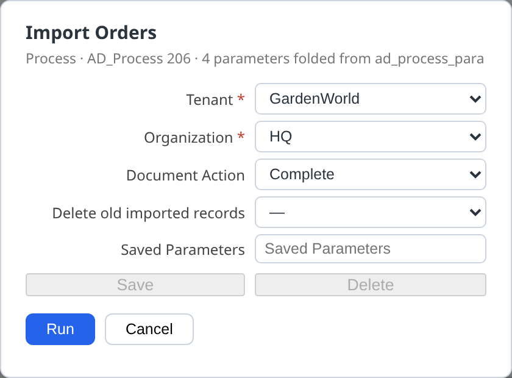
The Import Orders dialog.The first run: one order, three lines.
The error column. A line that cannot be made stays in Import Order with Imported N and the reason in Import Error Message, for example ERR=Invalid Product,. Correct the row and run the import again.
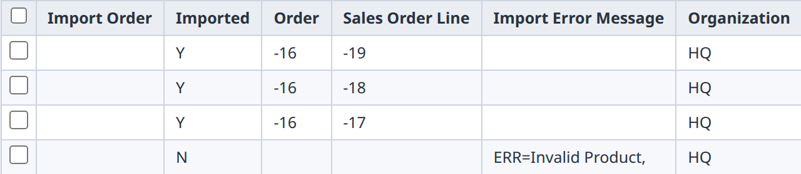
Three lines imported, one left with its reason.
Run it twice and nothing new is made. Running Import Orders again answers OK #0/0: rows already imported are never made again.
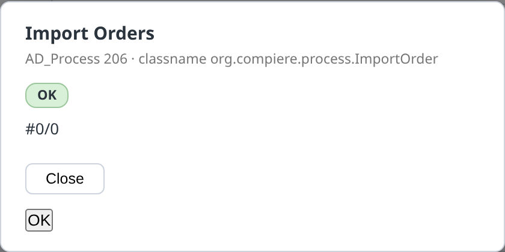
The second run: nothing new.
Replenish. The person who looks after stock opens Replenish Report (menu, or type in Filter menu…), chooses the branch's Warehouse and, to make the movement, Create = Inventory Movement. The movement is shared at the next Visit and goes back to the till of that branch only. Today a person runs it; the plan names a daily schedule, but nothing starts it by itself.
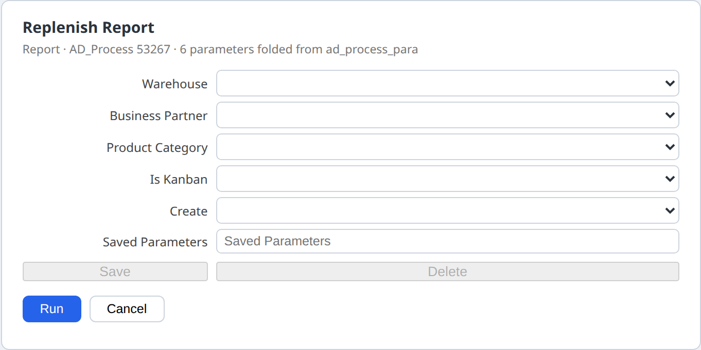
The Replenish Report dialog.
End of day: posting. Whether the books are posted at once or at day's end is the tenant's own setting, CLIENT_ACCOUNTING. The GardenWorld sample posts at once. To post at day's end, open System Configurator and add a record for the tenant with NameCLIENT_ACCOUNTING and Configured ValueQ. At the day's end run Tenant Accounting Processor from the menu; it posts what was queued.
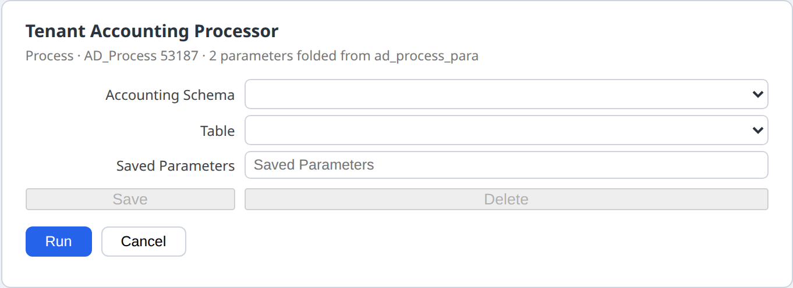
The Tenant Accounting Processor dialog.
4. Micro Finance
Customers' instalments on the GardenWorld books. It follows the same spine as the POS: the phone declares a payment row, head office imports it, the books are posted at the end of the day.
The System Administrator starts it once. Sign in as System / System, press ⋯ then the Plugin Engine pill, and press Start beside org.kernel.mf-lens (and org.kernel.pos-integration for the POS windows). They are installed but stopped until then.
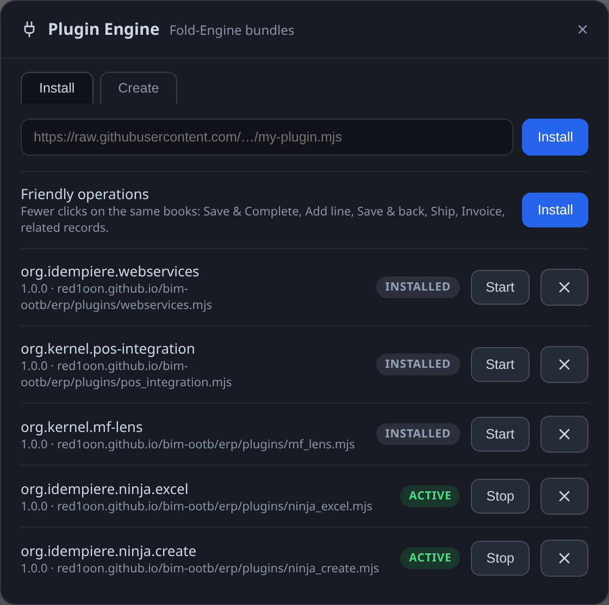
The Plugin Engine as the System Administrator.
Sign in as the GardenWorld admin. The home page now has a Micro Finance box with six links: Customer Invoice, Recurring, Recurring Run, Import Payment, Tenant Accounting Processor and Open Items. Each opens that window or process. Only the GardenWorld admin role sees the box; stopping the plugin removes it.
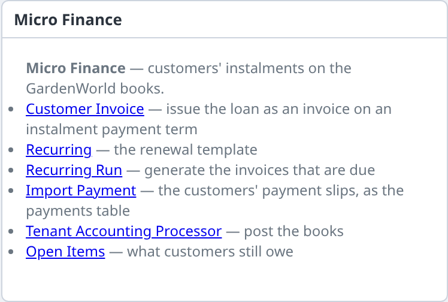
The Micro Finance box on the home page.
Bind the borrower's phone before you issue the loan. On the phone open https://red1oon.github.io/bim-ootb/erp/borrower.html, open Phone set-up, type the team's 64 characters (the part after #join= in the invite link) into Join a team (space id) and press Join. The phone shows This phone: …. At head office do Check join requests, choose Web Service Execution (50004), and bind the phone to the customer as in section 1 step 5 (the customer's C_BPartner_UU). Until it is bound the phone says This phone is not bound to a customer yet. If you bind after the loan was issued, the loan reaches the phone anyway, once, when you bind.
Set up the slip check on the phone, once. In Phone set-up fill Name, Adapter class, Host, Branch id and Key and press Save the service; the phone then says Using SlipOK (org.kernel.slipverify.SlipOK). This stays on that phone. SlipOK is only the sample service; another provider is another adapter and the same page.
Issue the loan. From the box open Customer Invoice and make an invoice for the customer on an instalment payment term (the sample has 50% Immediate - 50% in 30 days), add its line and Complete it. At the next Visit it reaches that borrower's phone, and only that phone: Loan, the Open (per head office books) amount and the due dates. The open amount is worked out from what head office has allocated; the phone never stores a balance.
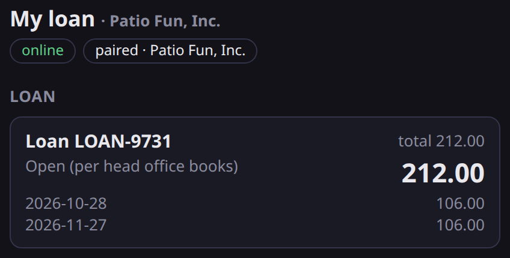
The loan on the borrower's phone.
The borrower pays. After a bank transfer, under Pay with a bank transfer slip choose the Loan, paste the Slip QR code (text), enter the Amount you paid and press Check the slip and save. Three things can happen:
Approved.Payment received. SlipOK confirmed 100.00 (ref …). at once, before any Visit; the slip shows Payment received.
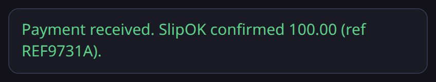
The banner after an approved slip.
Not acknowledged (the service cannot be reached, for example the phone is offline). The slip is saved on the phone and says SlipOK has not acknowledged this slip. It is saved on this phone. When this phone is online it checks the slip again by itself, then it goes to head office at your next Visit. A To do note stays until the service answers: the phone asks again by itself when it is online and before every Visit.
Refused. The service's own message is shown as it was sent, and the slip is listed as Not accepted. If a saved slip is refused when it is asked again, the To do note ends with Please send a correct slip. and a Done button.
The banner after a refused slip (the service's message).
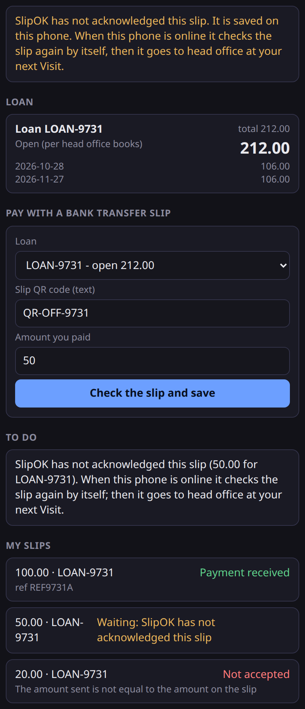
All three on one phone: the banner for the last slip, the To do note for the waiting one, and My slips listing Payment received, Waiting: … and Not accepted.Only approved slips are ever sent to head office. A slip that is waiting stays on the phone; a refused slip never leaves it. The messages in the pictures are the sample service's recorded replies.
Visit. Press Visit head office on the phone: approved slips go up, and the phone shows Last visit: …. At head office open Import Payment (from the box); the slips are there as rows. Run its process (Import Payments: Organization, Bank Account, Document Action, Delete old imported records) to make the receipts, allocated to the loan. The next Visit brings the new open amount back to the phone. Then post the books as in section 3, step 6. The import has no duplicate guard of its own; the phone refuses a second slip with the same bank reference.
Renewals.Recurring holds the template. When a renewal is due, run Recurring Run (Recurring Group, Cut Date, Document Action, Parameter Comment): it makes the invoices that are due, and each reaches its borrower's phone at the next Visit as another loan.
5. Plugins: everyone can see them, only the System Administrator changes them
Press ⋯ then the Plugin Engine pill. (The sign-in page also has a Plugins & Releases link to the same list.)
Every role sees the same list: each plugin's name, version and state. A role other than the System Administrator sees this notice, and no Install, Start, Stop or remove button:
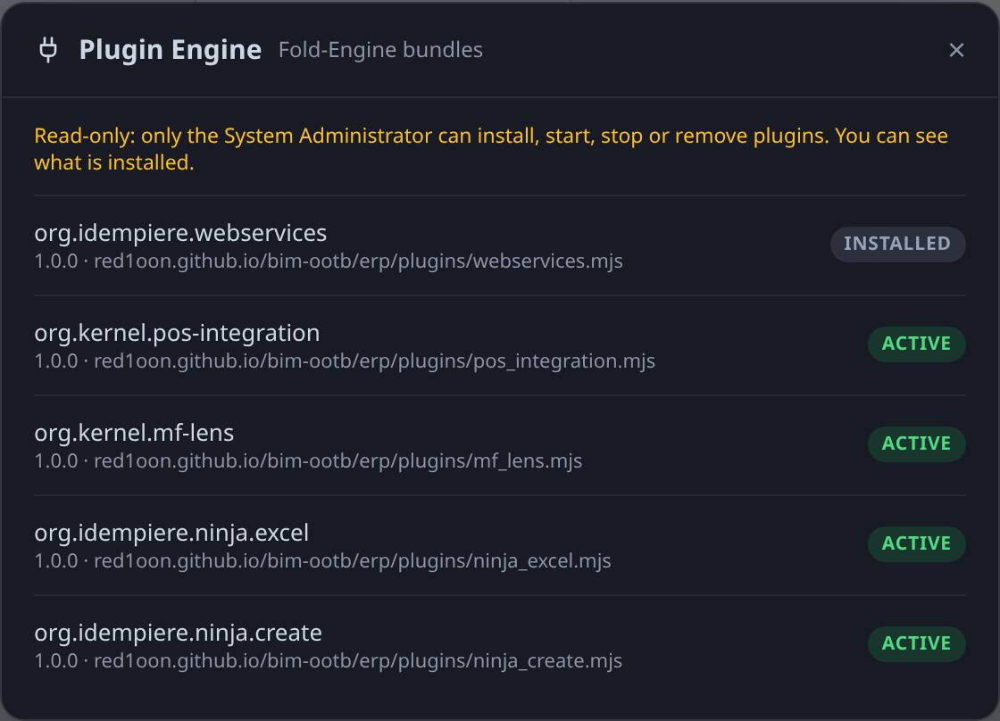
The Plugin Engine for a GardenWorld role.
Read-only: only the System Administrator can install, start, stop or remove plugins. You can see what is installed.
On Plugins & Releases the same notice says Read-only: only the System Administrator can install, start, stop or remove bundles. You can see what is installed. A plugin's own settings are not shown to a read-only role.
Only the System Administrator can install, start, stop or remove a plugin. The rule is in the plugin registry's own calls, not only in the buttons: a call from another role is refused and changes nothing, and everything the administrator does is logged with who and what.
For the team admin
Translation rules. A rule that lets older devices' changes be taken in must be signed with the team owner's key; the admin publishes it, and every device checks the signature before using it. A rule that is unsigned, edited after signing, or signed by a key the team does not trust is refused. Every device judges a rule by the keys the team trusted when it was published, so a later change of keys never undoes a rule on one device and not on another. A published rule cannot be withdrawn.
Trusted keys. When the app is set up with signing keys, a team started on it writes those keys into the team itself (for example a primary and a backup). They can be changed later — add a key, or let the backup replace a lost primary — only by a change signed with a key the team already trusts. An admin device on its own cannot change them.
Who completes. A list of document kinds and the role that completes each, signed with the team owner's key. It names roles only, and a Complete is judged by the list in force when it was done.
How to sign and publish. The owner key stays offline. On the owner's own computer, with the compiler's signing tool (build/scriptor/sign_plan.js): keygen <folder> makes the key pair (it refuses a folder inside the project, so the private key never ends up in it); stmt executors <list.json> <previous list.json | none> … or stmt plan-trust <keys.json> <previous keys.json> … makes the signed change; check <file> confirms it before you use it. The admin device then publishes the file with the app's admin function TeamSync.publishStatement (Modeller: TeamSyncModeller.publishStatement). It answers at once: accepted, or why not — stale (it was built on an older list: build it again from the list in force), untrusted (signed with a key the team does not trust), not admin (sent from a device that is not the admin).
There are no buttons for these yet: they are done through the app's admin functions.
What we can and cannot see about trial use
On the trial repository we can see how many devices and spaces appeared, how many bundles and rows were sent, and when. The business content is encrypted, so we cannot read your orders. We do not receive your network address: neither GitHub nor the visit log passes it on.
Good to know
Switching team mode off (Turn off team mode in the panel) leaves the page exactly as it was before.
Edits to records that came with the demo data, and stock reservations, are shared like any other change.
Document numbers are counted on each device, so two devices can give out the same number. Agreeing numbers across the team is not switched on yet.
The relay still carries every declared message, and each device keeps only its own. In a POS team a device takes in only the rows the plan declares for its role and its record, and refuses the rest on the device itself. The shared place on GitHub still holds the bundles the others sent: hiding them from it needs sealing, which is not built.
There is no standalone till program yet, and a credit sale (a ticket with no tender) is refused by Import POS Sales on purpose. Import Payment has no duplicate guard of its own.